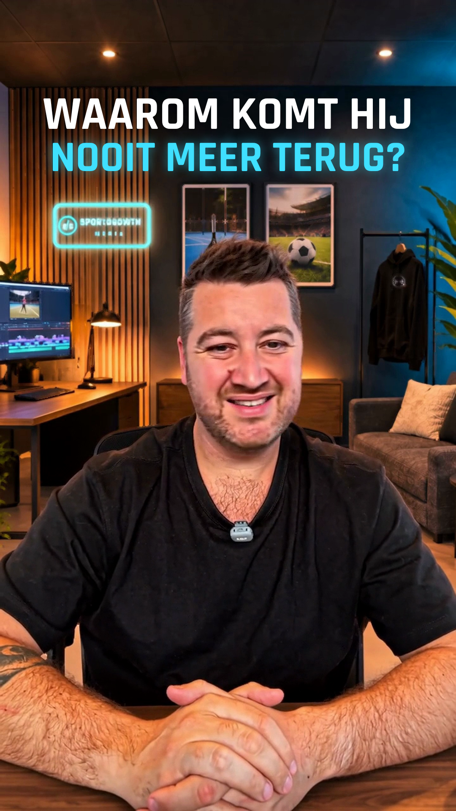

sportgrowth_media · nu
Nieuwe reel 👇
Doet jouw club dit al?

▶ Tik om te bekijken
Nodigen jullie proeflessers opnieuw uit?
JA
NEE
Zo maak je hem (1 min)
Open de reel, tik op het
papieren vliegtuigje
→
Toevoegen aan verhaal
.
Maak de reel iets kleiner en
draai hem een beetje
.
Tekst bovenaan:
"Nieuwe reel 👇"
en
"Doet jouw club dit al?"
(achtergrond aan).
Sticker →
Peiling
: "Nodigen jullie proeflessers opnieuw uit?" met
JA / NEE
.
Delen. Wie stemt, kan je daarna een DM sturen.